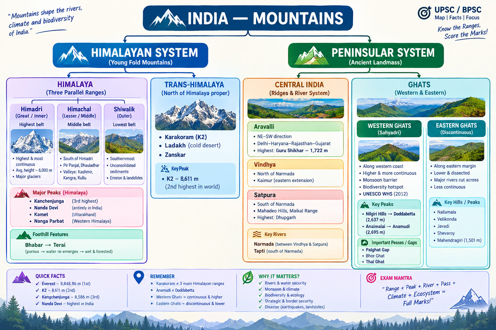

Mountain Ranges & Peaks of India
UPSC / BPSC active-recall revision: Himalayan divisions, Trans-Himalaya, Peninsular ranges, Western & Eastern Ghats, major peaks, passes, rivers, climate and exam traps.
range → location → peak → river → climate → ecosystem → map trap.
That turns a one-off geography image into reusable UPSC/BPSC map knowledge.

1 · Start with the map — two great mountain families
First separate the young Himalayan system from the ancient Peninsular mountain systems.
Core idea: The Himalayas are geologically young, tectonically active fold mountains.
- They form a huge arc along the northern margin of the Indian subcontinent.
- The Himalayan region extends broadly from the Indus valley in the west to the Brahmaputra valley in the east.
- The three main longitudinal ranges are Himadri, Himachal and Shiwalik.
- North of the Himalaya proper lie the Trans-Himalayan ranges, especially Karakoram, Ladakh and Zanskar.
- High relief, active tectonics, glaciers, snowfields, earthquakes and landslides make the Himalaya extremely significant for both physical geography and disaster geography.
Core idea: The Peninsular Plateau is an ancient, relatively stable landmass.
- Its major ranges are generally much older and more deeply eroded than the Himalayas.
- Important systems include Aravalli, Vindhya, Satpura, Western Ghats and Eastern Ghats.
- These ranges are closely linked with river basins, plateau edges, monsoon behaviour and biodiversity.
- Do not imagine every Peninsular range as a single sharp continuous mountain wall; many are old, broken, eroded or structurally complex.
At the eastern end of the Himalayas, the mountain system bends sharply southward.
- Important hill groups include the Patkai, Naga, Manipur and Mizo hills.
- Further west in Meghalaya are the Garo, Khasi and Jaintia Hills.
- This eastern extension is important for extremely high rainfall, dense forests, biodiversity and strategic connectivity toward Myanmar and Southeast Asia.
- For map questions, do not isolate the North-Eastern Hills from the larger Himalayan story.
| Big family | Age / nature | Key ranges to remember | Typical exam angle |
|---|---|---|---|
| Himalayan | Young fold, tectonically active | Himadri, Himachal, Shiwalik | Peaks, glaciers, rivers, earthquakes, passes |
| Trans-Himalayan | High mountain system north of Himalaya proper | Karakoram, Ladakh, Zanskar | K2, cold desert, glaciers, passes |
| Peninsular | Ancient, eroded, relatively stable | Aravalli, Vindhya, Satpura, Ghats | Rivers, plateau structure, monsoon, biodiversity |
2 · The three parallel Himalayas — high → middle → outer
Read these from north to south. That order itself is a memory tool.
- Position: Northernmost of the three main longitudinal Himalayan ranges.
- Nature: The most continuous and highest Himalayan belt.
- Average elevation: Around 6,000 m in standard NCERT descriptions.
- Peaks: Many of the great Himalayan peaks are associated with this high mountain zone.
- Glaciers: Major glaciers originate in the high Himalayan region.
- Importance: Snow and glaciers help sustain the perennial character of many Himalayan river systems.
Himadri = Highest + Hardest + High glaciers.
- Lies south of Himadri.
- More discontinuous and generally lower than the Great Himalaya.
- Contains important mountain systems such as the Pir Panjal and Dhauladhar.
- Known for numerous valleys, including the Kashmir, Kangra and Kullu valleys.
- Many Himalayan settlements and hill stations developed in or around this belt because of relatively accessible valleys and slopes.
Himachal = Middle Himalaya + Mountains + Valleys.
- Southernmost of the three major longitudinal Himalayan ranges.
- Generally the lowest Himalayan belt.
- Made substantially of relatively unconsolidated sediments deposited by rivers draining from the higher Himalayas.
- Because of its loose material and steep slopes, erosion and landslides are important geomorphic issues.
Longitudinal valleys between the Lesser Himalaya and Shiwalik are called Duns.
- Dehra Dun is the classic example.
- Other examples include Kotli Dun and Patli Dun.
- Do not confuse a Deccan valley or ordinary river valley with a Dun.
Himadri → Himachal → Dun → Shiwalik
is a useful simplified southward mental picture.
Bhabar is a narrow belt of coarse, porous deposits along the Himalayan foothills.
- Streams descending from the mountains may disappear underground because the coarse material is highly permeable.
Terai lies south of Bhabar.
- Streams re-emerge closer to the surface.
- It is wetter and historically supported dense forests and marshy conditions.
Himalaya → Shiwalik → Bhabar → Terai → Plains
| Range | Position | Relative height | Classic association |
|---|---|---|---|
| Himadri | North | Highest | Great peaks, snow, glaciers |
| Himachal | Middle | Intermediate | Pir Panjal, Dhauladhar, valleys |
| Shiwalik | South / outer | Lowest | Loose sediments, foothills, Duns nearby |
3 · Beyond the Himalaya proper — Trans-Himalaya
K2 belongs here. This single distinction prevents a large number of map-based mistakes.
- Lies north of the main Himalayan ranges.
- Part of the broader Trans-Himalayan mountain system.
- Extremely high relief and extensive glaciation.
- Contains the world's second-highest mountain, K2.
- Important glaciers include the Siachen Glacier in the eastern Karakoram.
- Important for physical geography, cryosphere studies, strategic geography and high-altitude environmental issues.
- Elevation: 8,611 m.
- Mountain system: Karakoram.
- World position: Second-highest mountain after Mount Everest.
- Its summit lies in the Pakistan-administered Gilgit-Baltistan region.
- In Indian map practice, treat it carefully: it is a major peak of the Karakoram and a key territorial/geographical reference, but do not casually label it as the highest peak of present-day India.
K2 → Karakoram → 8,611 m → 2nd highest in world
- Major high-altitude range of the Trans-Himalayan region.
- Closely associated with the Ladakh cold desert.
- The Indus, Shyok and related drainage systems are important map references in this region.
- Extremely dry conditions result from rain-shadow effects and the region's high-altitude continental environment.
- A major high-altitude mountain system associated with the western Trans-Himalayan / Himalayan transition zone.
- Known for spectacular deeply incised valleys and high passes.
- For map questions, place it broadly south of the Ladakh region and north of the Great Himalayan zone.
- The Zanskar–Great Himalaya transition is important in understanding the geography of Uttarakhand and the western/central Himalayan structure.
- Elevation: 8,126 m.
- One of the world's great high Himalayan peaks.
- Located in the western Himalayan region on the Pakistan-administered side.
- NCERT map practice includes Nanga Parbat among the major peaks students should recognize.
- Zoji La: important route between Kashmir and Ladakh.
- Rohtang Pass: important Himachal route connecting Kullu with the Lahaul region.
- Shipki La: Himachal Pradesh; important India–Tibet route in the Satluj region.
- Nathu La: Sikkim; major India–Tibet route.
- Jelep La: historic route in the Sikkim–Tibet region.
- Lipulekh Pass: Uttarakhand; important high-altitude route toward Tibet.
- Karakoram Pass: important historical route in the Karakoram region.
4 · The peaks you must be able to place without hesitation
Memorize the mountain + height + location + special distinction together.
- World's highest mountain.
- Located on the Nepal–China frontier.
- It is part of the Himalayan mountain system but is not in India.
- For Indian geography, it is useful as the reference against which K2 and Kangchenjunga are often compared.
- Elevation: 8,586 m.
- World rank: Third-highest mountain.
- Region: Eastern Himalaya.
- Indian association: Sikkim.
- It lies on the India–Nepal border.
- Extremely important in questions involving Sikkim, Himalayan peaks and mountain mapping.
Sikkim → Khangchendzonga → 8,586 m → 3rd highest globally
- Elevation: 7,816 m.
- State: Uttarakhand.
- Highest peak of Uttarakhand.
- Commonly described in Indian geography as the highest mountain entirely within India.
- Associated with the Nanda Devi National Park and the larger UNESCO World Heritage property involving Nanda Devi and Valley of Flowers.
- One of the highest peaks of Uttarakhand.
- Located in the Garhwal Himalaya region.
- Useful as a secondary peak after Nanda Devi for Uttarakhand map practice.
- State: Kerala.
- Mountain system: Western Ghats.
- Height: 2,695 m.
- Highest peak of: Western Ghats, South India and Peninsular India.
- Located in the Eravikulam National Park landscape.
- Associated with high-altitude shola-grassland ecosystems and the Nilgiri tahr.
- Height: 2,637 m.
- Location: Nilgiri Hills, Tamil Nadu.
- Special distinction: Highest peak of the Nilgiri Hills.
- Do not confuse it with Anamudi, which is higher and is the highest peak of the Western Ghats and Peninsular India.
- Height: 1,722 m.
- Location: Mount Abu, Rajasthan.
- Special distinction: Highest point of the Aravalli Range.
- Height: 1,501 m.
- Location: Odisha.
- Standard NCERT distinction: Highest peak of the Eastern Ghats.
- Useful in direct matching questions involving range → state → highest peak.
| Question wording | Answer to lock |
|---|---|
| Highest mountain in the world | Mount Everest — 8,848.86 m |
| Second-highest mountain in the world | K2 — 8,611 m |
| Third-highest mountain in the world | Kangchenjunga — 8,586 m |
| Highest mountain entirely within India | Nanda Devi — 7,816 m |
| Highest peak of Western Ghats | Anamudi — 2,695 m |
| Highest peak of Nilgiri Hills | Doddabetta — 2,637 m |
| Highest peak of Aravalli | Guru Shikhar — 1,722 m |
| Highest peak of Eastern Ghats | Mahendragiri — 1,501 m |
5 · Central India — Aravalli, Vindhya & Satpura
The crucial relationship here is not just the range name — it is the range + river + direction.
- One of India's most ancient surviving mountain systems.
- Runs broadly in a NE–SW direction.
- Passes through / influences the geography of Delhi–Haryana–Rajasthan–Gujarat.
- Highly eroded compared with the Himalayas.
- Important in Rajasthan's drainage, climate and desert-margin geography.
- Highest point: Guru Shikhar, 1,722 m, near Mount Abu.
Guru Shikhar is the highest point of the Aravalli Range.
- Located near Mount Abu, Rajasthan.
- Do not confuse the Aravalli Range with the Vindhya or Satpura ranges of central India.
- Located broadly north of the Narmada Valley.
- The term Vindhyas represents a broad and geologically complex system rather than a single perfectly continuous ridge.
- The Kaimur Range is an important eastern continuation associated with the Vindhyan system.
- Important in the physiographic division of central India.
- Located broadly south of the Narmada Valley.
- Important associated ranges/hills include the Mahadeo Hills and the Maikal Range.
- The Dhupgarh peak near Pachmarhi in the Mahadeo Hills is the highest point of the Satpura region.
- Closely associated with the drainage of central India.
The most useful mental picture is:
North
West-flowing river
South
- Narmada: major west-flowing Peninsular river.
- Tapti/Tapi: another major west-flowing Peninsular river to the south.
- The Narmada's course is strongly associated with a structural / rift-valley setting.
Vindhya ↑ | Narmada → | Satpura ↓
- Kaimur Range: important eastern extension associated with the Vindhyan system.
- Maikal Range: important eastern component associated with the Satpura system.
- Both help connect central Indian physiography with the upper drainage areas of major rivers.
- These names are useful especially in BPSC/UPSC map matching and river-origin questions.
6 · Western Ghats — India's great monsoon wall
Remember Western Ghats through continuity + height + monsoon + biodiversity + passes.
- Run broadly parallel to India's western coast.
- Associated with the states from the western/north-western part of the chain through Maharashtra, Goa, Karnataka and Kerala, continuing toward the Nilgiris and southern hills.
- Generally higher and more continuous than the Eastern Ghats.
- Average elevation is commonly given around 900–1,600 m.
- The Ghats form a major barrier to moisture-bearing southwest monsoon winds.
- They are a globally significant centre of biodiversity and endemism.
The southwest monsoon carries moisture from the Arabian Sea toward the Indian landmass.
- The Western Ghats force moist air to rise.
- Rising air cools, condensation increases and rainfall occurs.
- The western / windward side therefore receives heavy rainfall in many sectors.
- The eastern / leeward side can fall in a rain-shadow zone.
Moist wind → uplift → cooling → condensation → rainfall → rain shadow
- State: Kerala.
- Height: 2,695 m.
- Highest peak: Western Ghats and Peninsular / South India.
- Located in the Eravikulam National Park landscape.
- Ecologically important for high-altitude grasslands, shola forests and the Nilgiri tahr.
- Located near the broad junction of the Western and Eastern Ghats.
- The name literally means the Blue Mountains.
- Located mainly around the Tamil Nadu–Kerala–Karnataka highland meeting zone.
- Doddabetta (2,637 m) is the highest peak of the Nilgiri Hills.
- Important for montane ecosystems and southern Indian hill geography.
- Important break in the otherwise broadly continuous Western Ghats.
- Located between the highlands of Kerala and Tamil Nadu.
- Historically and economically important as a route of movement and connectivity.
- Climatically important because it allows some air movement through the Ghats rather than forcing a continuous barrier effect.
- Bhor Ghat: important route across the Western Ghats in Maharashtra; historically significant for Mumbai–Pune connectivity.
- Thal Ghat: important route through the northern Western Ghats; associated with the Mumbai–Nashik corridor.
- Remember both as major transport corridors through the Western Ghats.
- Recognized as a major global biodiversity hotspot.
- High levels of endemism occur because of long-term ecological isolation and varied elevation.
- Important ecosystems include tropical evergreen forests, montane forests, shola-grassland systems and high-rainfall landscapes.
- Species commonly discussed in exams include lion-tailed macaque, Nilgiri tahr, Nilgiri langur, tiger and Asian elephant.
- The Western Ghats were inscribed as a UNESCO World Heritage Site in 2012.
7 · Eastern Ghats — lower, broken and river-dissected
The easiest contrast: Western = continuous and higher; Eastern = discontinuous and dissected.
- Lie along the eastern margin of the Peninsular Plateau.
- Extend broadly from the Mahanadi Valley toward the Nilgiris.
- Lower on average than the Western Ghats.
- Markedly discontinuous and irregular.
- Major east-flowing rivers such as the Mahanadi, Godavari, Krishna, Pennar and Cauvery cut through the Eastern Ghats.
- These river gaps are a major reason the range is not as continuous as the Western Ghats.
- Height: 1,501 m.
- State: Odisha.
- Standard exam distinction: Highest peak of the Eastern Ghats.
These names are useful as associated hill groups of the Eastern Ghats region.
- Nallamala Hills: important forested hill system of Andhra Pradesh.
- Velikonda Hills: eastern Andhra region.
- Palkonda Hills: Andhra Pradesh / southern Eastern Ghats region.
- Javadi Hills: Tamil Nadu.
- Shevaroy Hills: Tamil Nadu.
These should be treated as associated hill groups rather than forced into one rigid, universally agreed sequence.
The key reason for exam purposes is river incision and long-term erosion.
- Large rivers flowing eastward to the Bay of Bengal cut across the old uplands.
- This produces a more broken landscape than the comparatively continuous Western Ghats.
- Hence the classic comparison:
Western Ghats = continuousvsEastern Ghats = discontinuous.
| Feature | Western Ghats | Eastern Ghats |
|---|---|---|
| Position | Western edge of Deccan Plateau | Eastern edge of Peninsular Plateau |
| Continuity | More continuous | Discontinuous |
| General elevation | Higher | Lower |
| Major rivers cutting through | Fewer major cross-cutting rivers | Many major east-flowing rivers |
| Highest peak | Anamudi — 2,695 m | Mahendragiri — 1,501 m |
| Monsoon role | Strong barrier / orographic rainfall effect | Less effective as a continuous barrier |
8 · The river–mountain–climate connections UPSC loves
These are the links that turn factual geography into analytical geography.
- High Himalayan areas store water as snow and ice.
- Seasonal snowmelt and glacier melt contribute to river discharge.
- Monsoon rainfall also adds large seasonal inputs.
- This combination contributes to the perennial nature of the major Himalayan river systems.
Indus + Ganga + Brahmaputra
- The Himalayas obstruct the free movement of very cold continental air from the north.
- They interact with moisture-bearing monsoon winds and influence rainfall distribution.
- Thus the mountain chain is both a physical barrier and a major climatic control.
- Moist air from the Arabian Sea reaches the west coast.
- Western Ghats force air upward.
- Heavy rainfall occurs on many western slopes.
- Areas east of the crest may lie in a rain-shadow region.
- This helps explain strong rainfall contrasts over relatively short horizontal distances in peninsular India.
- Altitude creates strong changes in temperature and moisture.
- Different elevation bands therefore support different vegetation and animal communities.
- Isolation of mountain habitats can increase endemism.
- This is particularly visible in the Western Ghats and the high mountains of the Himalaya.
9 · Map traps — the distinctions that save marks
Read the question wording carefully. Many wrong answers are technically plausible but belong to the wrong category.
The three principal parallel ranges of the Himalaya proper are:
Himadri → Himachal → Shiwalik
Karakoram belongs to the broader Trans-Himalayan system.
- Anamudi — 2,695 m: highest peak of Western Ghats / Peninsular India.
- Doddabetta — 2,637 m: highest peak of Nilgiri Hills.
Anamudi = Ghats topper | Doddabetta = Nilgiri topper
K2 is the world's second-highest mountain and lies in the Karakoram on the Pakistan-administered side of the region.
For standard Indian geography wording, Nanda Devi is the highest mountain entirely within India.
- Western Ghats: comparatively continuous and higher.
- Eastern Ghats: discontinuous and heavily dissected by major rivers.
North
Between them
South
This simple arrangement is extremely useful in central Indian map questions.
| Confusing pair | Remember this |
|---|---|
| Himadri vs Himachal | Himadri is the highest/innermost; Himachal is the Lesser/Middle Himalaya. |
| Himachal vs Shiwalik | Shiwalik is the outermost southern belt. |
| Karakoram vs Himalaya proper | Karakoram belongs to the Trans-Himalayan system. |
| Nanda Devi vs Kangchenjunga | Nanda Devi is entirely within India; Kangchenjunga is on the India–Nepal border. |
| Anamudi vs Doddabetta | Anamudi = Western Ghats; Doddabetta = Nilgiris. |
| Western vs Eastern Ghats | Western = higher/more continuous; Eastern = lower/discontinuous. |
10 · Memory tricks that save you
Himadri is highest, Himachal is middle, Shiwalik is outer and lowest.
Place Narmada between Vindhya and Satpura whenever a central-India map appears.
Anamudi = Western Ghats, Doddabetta = Nilgiri, Mahendragiri = Eastern Ghats, Guru Shikhar = Aravalli.
Western Ghats behave more like a continuous high wall; Eastern Ghats are broken by major rivers.
Then switch from world ranking to India-specific geography: Nanda Devi is the key “entirely within India” answer.
11 · Rapid Fire
Hide everything first. Answer mentally. Then tap only the questions you actually need to check.
Final revision rule: place the range first, then attach the peak, river, pass, climate effect and ecosystem. That is far harder to forget than a naked list of mountain names.